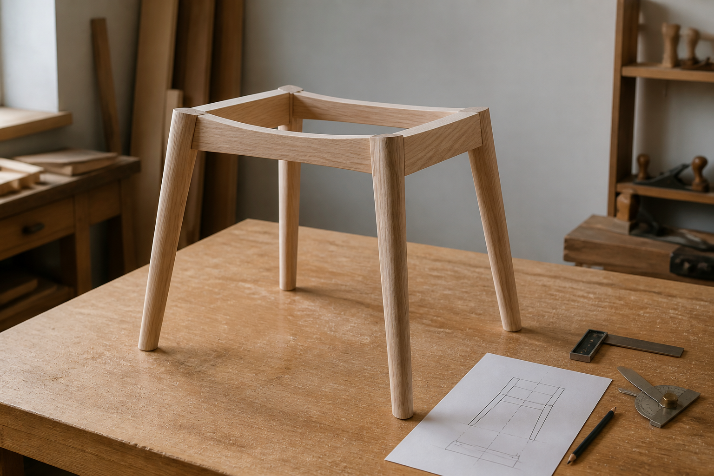

의자 다리 벌어짐 각도가 안정감을 만드는 방식

의자를 볼 때 사람의 눈은 먼저 등받이와 좌판을 봅니다. 하지만 의자의 안정감은 바닥에 닿는 네 개의 점에서 시작됩니다. 다리가 수직으로 곧게 내려오는 의자는 단정하고 제작이 비교적 쉽지만, 사용자가 몸을 기울이거나 일어서는 순간에는 바닥에서 받치는 폭이 좁게 느껴질 수 있습니다. 반대로 다리가 바깥쪽으로 적절히 벌어진 의자는 같은 좌판 크기에서도 더 넓은 지지 영역을 만들고, 몸의 작은 움직임을 조금 더 여유 있게 받아 줍니다.
이 벌어짐을 보통 스플레이(splay)라고 부릅니다. 앞뒤로 벌어지는 각도와 좌우로 벌어지는 각도가 모두 포함됩니다. 중요한 점은 스플레이가 단순한 스타일이 아니라는 것입니다. 다리의 각도는 바닥 접지 폭, 좌판 아래 프레임의 결구, 사용자가 앉고 일어설 때의 힘, 의자가 테이블 아래로 들어가는 정도까지 함께 바꿉니다.
안정성은 바닥에 그려지는 면에서 시작됩니다
의자의 네 다리 끝을 바닥에 표시하면 하나의 지지 영역이 생깁니다. 사용자의 몸과 의자 무게가 만든 무게중심이 이 영역 안에 머물수록 의자는 안정적입니다. 사람이 등받이에 기대거나 옆으로 손을 뻗으면 무게중심은 뒤나 옆으로 이동합니다. 이때 다리 끝이 만드는 영역이 너무 좁으면 작은 움직임에도 흔들림이나 전도 위험이 커집니다.
다리를 바깥쪽으로 조금 벌리면 좌판 크기를 크게 키우지 않아도 바닥 접지 폭을 넓힐 수 있습니다. 특히 등받이가 있는 의자는 뒤로 기대는 동작이 반복되기 때문에 앞뒤 방향의 안정성이 중요합니다. BIFMA는 사무·공공용 좌석 기준에서 의자의 전방·후방 안정성, 반복 하중, 구조 적정성을 별도 시험 항목으로 다룹니다. 가정용 목재 의자도 실험실 기준을 그대로 적용할 필요는 없지만, 안정성을 감각이 아니라 하중과 사용 동작의 문제로 보아야 한다는 점은 같습니다.
너무 적은 벌어짐은 단정하지만 여유가 작습니다
다리가 거의 수직인 의자는 미니멀하고 곧은 인상을 줍니다. 제작도 명확합니다. 좌판 아래 프레임과 다리가 직각에 가까워 결구 가공이 단순하고, 같은 부재를 반복해서 만들기 쉽습니다. 식탁 의자처럼 여러 개를 나란히 배치해야 하는 경우에는 폭을 줄일 수 있다는 장점도 있습니다.
하지만 다리가 수직에 가까울수록 바닥 지지 영역은 좌판의 투영 면적과 비슷해집니다. 사용자가 등받이에 강하게 기대거나, 한쪽 팔걸이에 체중을 싣거나, 의자를 비스듬히 끌어 앉을 때 여유가 줄어듭니다. 특히 좌판이 높고 등받이가 큰 의자는 상부 무게와 사용자의 움직임이 더 크게 작용하기 때문에 다리의 각도와 위치를 더 보수적으로 봐야 합니다.
너무 큰 벌어짐은 안정적이지만 다른 문제를 만듭니다
다리를 크게 벌리면 바닥 접지 폭은 넓어집니다. 낮은 스툴이나 라운지 체어에서 이런 방식은 안정감 있는 인상을 줍니다. 문제는 과한 벌어짐이 생활 동선과 제작 구조를 방해할 수 있다는 점입니다. 다리 끝이 좌판보다 많이 튀어나오면 발에 걸리기 쉽고, 의자를 테이블 아래로 밀어 넣을 때 다른 의자나 테이블 다리와 부딪힐 수 있습니다.
결구도 어려워집니다. 다리가 앞뒤와 좌우 두 방향으로 동시에 기울어지면 좌판 아래 프레임, 장부, 코너 블록, 스트레처의 접합 각도가 모두 달라집니다. 겉으로는 작은 각도 차이처럼 보여도 실제 제작에서는 같은 길이의 다리가 서로 다른 방향으로 정확히 닿아야 합니다. 네 다리 중 하나만 미세하게 높이가 달라도 흔들림이 생기므로, 스플레이가 큰 의자일수록 지그와 가공 정밀도가 중요합니다.
앞다리와 뒷다리는 같은 역할을 하지 않습니다
앞다리는 착석과 기립 동작을 많이 받습니다. 사용자가 앉을 때 몸이 앞으로 내려오고, 일어설 때 좌판 앞쪽을 밀고 나가기 때문입니다. 그래서 앞다리는 무릎 공간과 발 위치를 방해하지 않으면서도 좌판 앞쪽을 안정적으로 받쳐야 합니다. 앞다리가 너무 바깥으로 벌어지면 안정성은 늘 수 있지만, 식탁 아래에서 다리끼리 간섭하거나 발에 걸리는 문제가 생길 수 있습니다.
뒷다리는 등받이와 함께 작동합니다. 사용자가 등을 기대면 힘은 좌판 뒤쪽과 등받이, 뒷다리로 전달됩니다. 뒷다리가 뒤로 적절히 물러나 있으면 기대는 동작을 더 여유 있게 받아 줍니다. 반대로 뒷다리가 너무 안쪽에 있으면 등받이가 있는 의자임에도 뒤로 기대는 느낌이 불안해질 수 있습니다. 그래서 좋은 의자는 네 다리를 같은 각도로 벌리는 것이 아니라, 앞뒤의 역할을 나누어 봅니다.
인체공학은 좌판 위에서만 결정되지 않습니다
의자의 편안함은 좌판 높이, 깊이, 등받이 각도처럼 몸에 직접 닿는 요소에서 크게 좌우됩니다. Cornell Ergonomics는 앉은 자세에서 하나의 이상적인 자세만을 전제로 의자를 설계할 수 없고, 사용자가 여러 자세를 취할 수 있어야 한다고 설명합니다. 이 관점에서 다리 벌어짐은 간접적인 인체공학 요소입니다. 사용자가 몸을 조금 돌리거나 기대거나 앞으로 나올 때 의자가 얼마나 안정적으로 반응하는지에 영향을 주기 때문입니다.
또한 안정적인 다리 구조는 사용자가 의자를 조심스럽게 다루지 않아도 되게 만듭니다. 좋은 의자는 앉을 때마다 균형을 의식하게 하지 않습니다. 좌판과 등받이가 몸을 받아 주는 동안, 다리와 프레임은 바닥에서 조용히 여유를 만들어야 합니다. 편안함은 푹신함만이 아니라 이런 예측 가능한 안정감에서도 나옵니다.
스트레처와 좌판 프레임이 각도를 붙잡습니다
다리를 벌리는 순간, 다리는 단순한 수직 기둥이 아니라 기울어진 보처럼 작동합니다. 좌판 아래 프레임과 다리의 접합부에는 수직 하중뿐 아니라 벌어진 방향으로 밀고 당기는 힘도 생깁니다. 이 힘을 제대로 잡지 못하면 사용 중에 다리 각도가 조금씩 흔들리고, 결국 의자의 유격으로 느껴집니다.
이때 스트레처, 즉 다리 사이를 잇는 가로 부재가 중요해집니다. 스트레처는 다리 네 개가 서로 따로 움직이지 않도록 묶고, 좌우 흔들림을 줄입니다. 모든 의자에 같은 높이와 같은 굵기의 스트레처가 필요한 것은 아니지만, 다리가 가늘고 길거나 벌어짐이 큰 구조라면 다리 사이 연결을 더 진지하게 검토해야 합니다. 좌판 아래 프레임, 코너 보강, 장부 깊이도 같은 문제를 다루는 장치입니다.
가구를 고를 때 볼 지점
의자를 고를 때는 디자인 사진만 보지 말고 실제로 바닥에서 어떻게 서 있는지 확인하는 것이 좋습니다. 다리의 각도는 화려한 설명 없이도 사용감에 바로 영향을 줍니다.
- 네 다리 끝이 바닥에 고르게 닿고 흔들림이 없는지 봅니다.
- 등받이에 기대도 뒤로 불안하게 넘어갈 듯한 느낌이 없는지 확인합니다.
- 다리 끝이 좌판보다 지나치게 튀어나와 발에 걸리지 않는지 살핍니다.
- 식탁이나 책상 아래로 넣었을 때 테이블 다리와 간섭하지 않는지 봅니다.
- 다리와 좌판 프레임의 결합부, 스트레처, 코너 보강이 각도를 충분히 잡고 있는지 확인합니다.
목간의 시선
목간이 의자 다리를 볼 때 중요하게 여기는 것은 각도의 이유입니다. 다리가 곧아야 하는 의자도 있고, 바깥으로 벌어져야 더 좋은 의자도 있습니다. 핵심은 형태가 먼저가 아니라 사용 장면이 먼저라는 점입니다. 식탁에서 자주 넣고 빼는 의자인지, 오래 기대어 앉는 의자인지, 낮은 스툴인지, 팔걸이가 있는 의자인지에 따라 필요한 안정감과 동선이 달라집니다.
좋은 스플레이는 과시적이지 않습니다. 사용자가 앉고, 기대고, 몸을 돌리고, 다시 일어나는 동안 의자가 자연스럽게 버티는 정도면 충분합니다. 다리 끝이 만드는 작은 바닥 면적 안에 구조와 인체공학, 생활 동선이 함께 들어 있습니다. 의자의 안정감은 눈에 잘 띄지 않는 각도에서 시작되고, 매일 앉는 순간마다 조용히 확인됩니다.